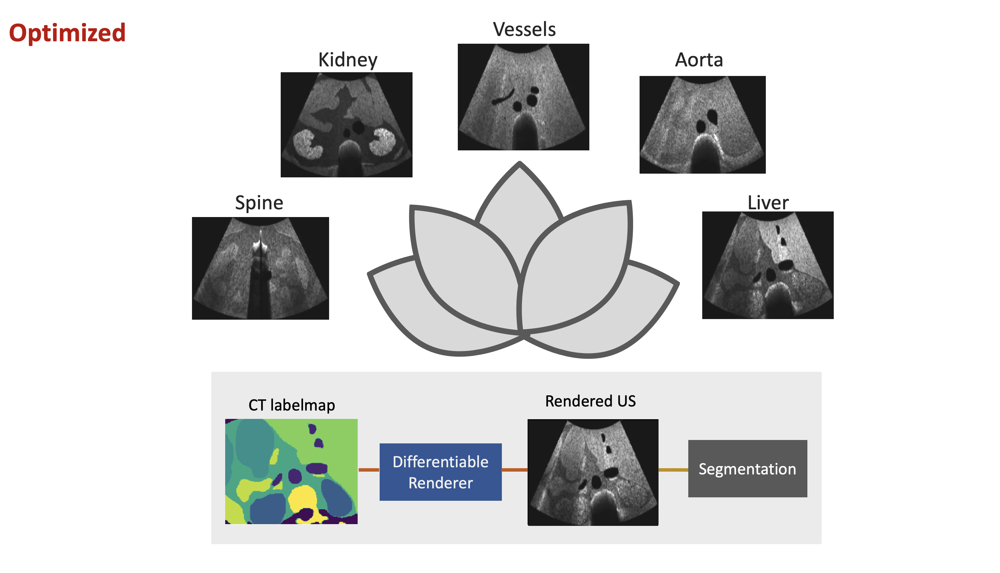

|
Yordanka (Dani) Velikova I am a PhD researcher in the Computer-Aided Medical Procedures Lab (CAMP) at the Technical University of Munich, under the supervision of Prof. Navab where I work on Ultrasound image segmentation and Robotic Ultrasound. Email / Google Scholar / Twitter / Github |
{kind=link}
ResearchMy research is primarily focused on unsupervised medical image segmentation in particular for ultrasound imaging as well as image-based robotic ultrasound navigation. Beyond this, my interests branch into implicit neural representations, spectral embedding, shape completion, breathing compensation, and object tracking with transformers. |
|

|
LOTUS: Learning to Optimize Task-based US representations
Yordanka Velikova, Mohammad Farid Azampour, Walter Simson, Vanessa Gonzalez Duque, Nassir Navab MICCAI 2023 (Oral Presentation) project page / arXiv Optimizing Ulrasound Intermediate Representations guided by the segmentation task. Trained end-to-end with domain adaptation network to account for the domain gap between real and simulated. |
  |
CACTUSS: Common Anatomical CT-US Space for US examinations
Yordanka Velikova, Walter Simson MICCAI, 2022 (Oral Presentation) Arxiv / Code By embedding mixtures of shapes & lights into a soft segmentation of an image, and by leveraging the output of the Kinect, we can extend SIRFS to scenes.
|
|
Template webpage from source code. |